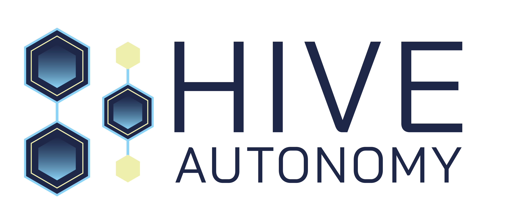

Wheel-loader autonomy
for Copper One, ready
when you scale to Lone Wolf.
Supervised physical AI on your Volvo loaders, starting with the re-handling cycle you suggested on the 7 May call. We earn the Lone Wolf fleet by showing you the numbers along the way.

02 · OPERATIONAL MODELAn operating model that fits how you actually run a pit.
The retrofit kit is the easy part. What separates us is everything wrapped around it, from the ops center watching the machine, to the contract that guarantees uptime, to the OEM partnership that makes the equipment easy to source.
An ops center watching the machine, around the clock.
Kristiansand supervises every Hive machine in operation today. We're standing up a Houston center this year so the Americas runs on its own time zone, working alongside one of the largest energy operators in Texas.
The 100 percent uptime guarantee runs through this center — the part of the model most autonomy vendors can't justify to their investors.
Operator cost down, uptime guaranteed in writing.
You pay 80 percent of what an operator costs you today, and you get 100 percent uptime in the contract. When the AI hits something it can't handle, our remote operator drives the machine until it's back in autonomous mode.
The technology risk stays with us. The same numbers you read here go in the term sheet.
Co-developing the wheel-loader integration with Volvo.
Hive is one of three vendors Volvo is evaluating for their global autonomy program, and we're already co-developing the wheel-loader integration with their engineering team. The goal is that any Volvo dealer in North America can quote Hive on a loader.
Three ways to buy: A. you own the loader, we retrofit. B. bundled rental — loader, autonomy, remote ops in one contract. C. you buy, lease the autonomy. The rental option helps if Lone Wolf timing doesn't match your purchase cycle.
Starting with the one that matters most: safety.
You raised four concerns on the call. Three of them we can answer firmly, and the mining-benchmark one is a real gap we'll own up front.
The internal bar: our operation is measurably safer than what you run today, and nobody gets hurt. Four safety layers run in parallel — remote & core systems (health, brake feedback, control logic, e-stops), autonomy (localization, path planning, object detection, geofencing, a confidence monitor that triggers handover), an independent PLd-certified third-party stop system, and operational safety set with your team (speed zones, traffic flow, exclusion zones, site HSE).
Statens Vegvesen (Norwegian Public Roads) has cleared us to run autonomously on a public mountain pass at Vikafjellet, including under closed-road winter conditions. Live public infrastructure, not a test site. We work against ISO 3691-4, 17757, 20474, 13849, 13850, and 12100, and we'll walk the full case with your team during the deep-dive.
We haven't benchmarked at hard-rock copper scale, and we won't pretend otherwise. The closest cycle analog we run today is the aggregate work at Feiring Bruk and Hamar Pukk. On your site, phase one starts remote-operated by our team while every cycle becomes labeled training data. The 100 percent uptime guarantee runs from the first shift at 80 percent of your current operator cost, so the economics work whether we're 50 or 95 percent autonomous on any given cycle.
You run Celona private 5G, and we ship on Celona-class private 5G inside road tunnels with Veidekke today — physically harsher than an open pit. Before any kit lands we run a one-week audit (latency, jitter, packet loss, coverage at faces and haul roads) and deliver a green-amber-red cell map plus a Wi-Fi mesh failover plan. Send us your current coverage report and we'll run audit assumptions before the next call.
Our engineering team is on-site at Copper One for two to three weeks during install, with quarterly passes after that. Day-to-day support runs through Houston ops with a single point of contact, and any incident we can't resolve remotely gets an engineer to Copper One within 24 hours. Moab doesn't have a local autonomy labor pool — that's why Houston-plus-fly-in is the model.
Six questions to ask every wheel-loader vendor.
We've been on the buyer's side of an autonomy evaluation, and these are the questions that separated vendors who could actually run a site from vendors who could run a demo. Ask us first, then send them to the others.
Live sites, scaled pilots, and the three things we'd do next.
Hive Autonomy · Kristiansand & Houston (standing up) · ronny.liverod@hiveautonomy.no